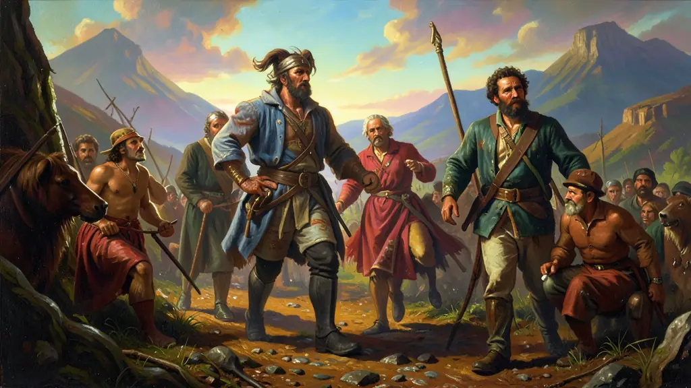
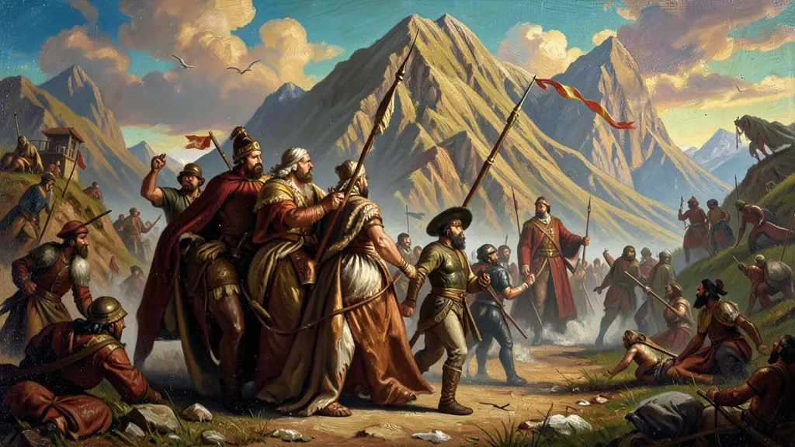
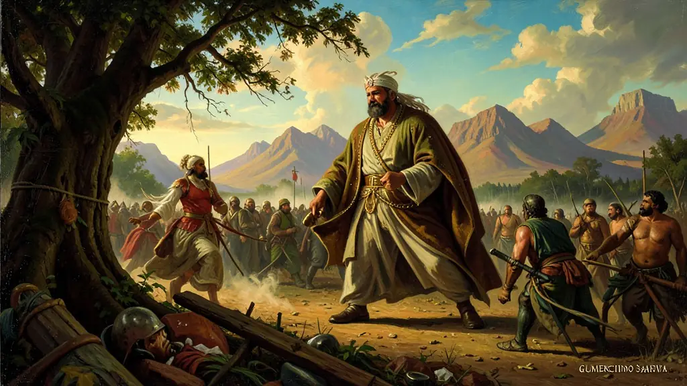

Capítulo 01
1. Pica-paus e Maragatos: O Ódio Gaúcho
A briga começou pela cadeira de governador (o 'castilhismo'). Júlio de Castilhos governava o Rio Grande como se fosse um rei particular. Seus rivais federalistas não aceitavam as fraudes e a perseguição política. O Rio Grande virou um barril de pólvora pronto para explodir, dividido entre o lenço vermelho (Maragatos) e o lenço branco (Pica-paus), em um ódio que separava famílias e cidades inteiras.

Capítulo 02
2. A Barbaridade da Degola
Ao contrário de outras guerras civis mundiais, a Federalista foi regida pelo terror psicológico. Fazer prisioneiros era um luxo que nenhum lado podia pagar. A 'degola' tornou-se uma prática rotineira de comemoração após cada batalha. Sargentos e generais cortavam os pescoços de centenas de inimigos rendidos, justificando a barbárie como uma economia de balas para as próximas lutas. O Brasil nunca viu tal crueldade institucionalizada.

Capítulo 03
3. Gumercindo Saraiva: O Caudilho dos Pampas
Gumercindo era o braço armado dos Maragatos. Um cavaleiro incansável que levou a guerra até o Paraná, sitiando cidades e aterrorizando as tropas federais de Floriano Peixoto. Sua tática de guerrilha desmoralizou o exército brasileiro por meses. Ele foi o pesadelo do Marechal de Ferro, provando que o interior do Brasil não aceitava as ordens do Rio de Janeiro sem lutar.

Capítulo 04
4. O Cerco da Lapa: A Heroica Resistência
No Paraná, a cidade da Lapa resistiu durante 26 dias ao cerco de Gumercindo Saraiva. As tropas federais, lideradas pelo coronel Gomes Carneiro, lutaram até a última pedra sob fome e sede. Essa resistência deu tempo para que Floriano Peixoto reorganizasse suas forças e evitasse a invasão de São Paulo pelos maragatos. Gomes Carneiro morreu na batalha, tornando-se o grande mártir da legalidade republicana.
Capítulo 05
5. A Paz dos Vencedores (1895)
O primeiro presidente civil, Prudente de Morais, queria acabar com a guerra de extermínio no Sul. Sem Gumercindo (morto em combate), a revolta perdeu força. A paz de 1895 trouxe a anistia para os rebeldes, mas Júlio de Castilhos permaneceu no poder por décadas no Rio Grande do Sul. A lição foi clara: a República Brasileira seria centralizada e autoritária, e quem tentasse mudar isso morreria pelo fuzil ou pela faca.
Ocorrida nas etapas de consolidação da hegemonia republicana civil, a Revolução Federalista (1893-1895) no Rio Grande do Sul marcou a eclosão da oposição regional entre o autoritarismo positivista encarnado pelos 'Pica-paus' ou Castilhistas (Partidos Republicano Riograndense) e os dissidentes 'Maragatos' do estamento estancieiro gascão. Mais do que um conflito gaúcho-nacionalista, expunha a insatisfação com as tendências discricionárias da presidência centralizada de Floriano Peixoto (A Segunda República da Espada).
Sanguinolenta em proporções impressionantes, a Revolução Federalista é reconhecida pelos métodos de barbaridade da guerra de guerrilha: torturas generalizadas e a institucionalização macabra das 'degolas', implementadas tanto pela máquina castilhista quanto pelos exércitos irregulares dos Maragatos. Tratou-se simultaneamente de uma cisão intraclassista, um embate entre o projeto urbano positivista que defendia as oligarquias paulistas/florianistas, e os grandes fazendeiros liberais ligados ao passado político do final do Império, temerosos das prebendas de Júlio de Castilhos.
Para exames de larga escala no Brasil, a Revolução destaca o conturbado processo de estabilização do Regime Republicano, em simbiose (no caso naval com a Revolta da Armada). Evidencia-se um sistema partidário em que a ausência do poder imperial modulador transformou as disputas eleitorais em verdadeiros espetáculos de extermínios militarizados. É vital compreender este acontecimento como uma das muitas 'cicatrizes púrpuras' de exclusão e autoritarismo da jovem e frágil República Velha do Brasil rural.
Fonte: SILVA, Hélio. A República da Espada: Floriano Peixoto. Civilização Brasileira, 1978.
Atividades interativas
Questões para fixar
O conflito conhecido como Revolução Federalista (1893-1895) no Rio Grande do Sul opôs duas facções políticas ferrenhas. Quais eram elas?
A prática sistemática da 'Degola' durante a Revolução Federalista é interpretada pelos historiadores como:
Qual foi o principal motivo que levou à eclosão da Revolução Federalista no Rio Grande do Sul em 1893?
Quem liderou os Maragatos, grupo federalista, durante a Revolução Federalista?
Qual foi o método de execução utilizado por ambos os lados durante a Revolução Federalista para aterrorizar o inimigo e economizar munição?